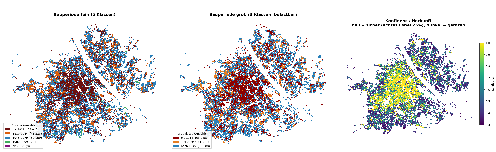
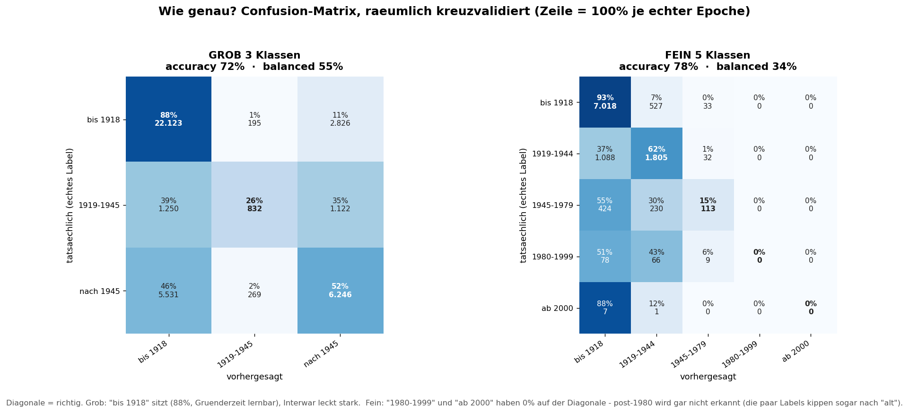
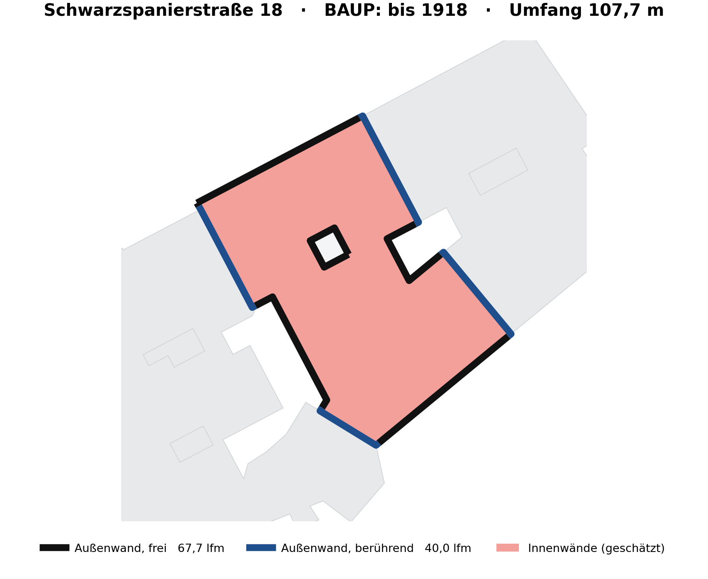

Zwei Modelle arbeiten im Hintergrund: eines sagt, woraus ein Bauteil besteht, das andere, wann ein Gebäude errichtet wurde. Beide laufen selbst gehostet, ohne externe Dienste, und beide sagen offen dazu, wo sie aufhören.
Ein Aufbau wird von innen nach außen erfasst: Putz, Ziegel, Putz. Das Modell lernt nicht, welche Materialien vorkommen, sondern welches Material auf welche zwei vorangegangenen folgt — ein Markov-Modell zweiter Ordnung, P(nächstes | vorletztes, letztes), gewichtet nach Nettofläche und getrennt nach Bauperiode, Ort im Gebäude und Bauteilart.
Die zweite Ordnung ist der Punkt. Aus „Anfang, Putz" allein wäre auch ein Abbruch nach der ersten Schicht denkbar; aus „Anfang, Putz, Ziegel" ist klar, dass noch eine folgt. Fehlt ein Kontext, fällt das Modell schrittweise auf den allgemeineren zurück.
Trainiert ist es auf elf realen Vermessungen aus den Use Cases. Die gemessenen Aufbauten werden zu einem Katalog normalisiert, dessen Zellen Bauperiode × Ort × Art aufspannen: Keller, Regelgeschoss und Dachgeschoss als Orte, Außenwand freistehend oder an den Nachbarn grenzend, Innenwand, Boden und Dach als Arten. Jede Zelle hält die dort tatsächlich gemessenen Schichtfolgen samt ihrer Nettoflächen.
Dasselbe Modell prüft nicht nur, es schlägt auch vor. Für eine leere Zelle sucht eine Strahlsuche die wahrscheinlichste Folge, eine zweite Stufe legt anschließend die Schichtdicken darüber. So bekommt jedes Gebäude eine Materialzusammensetzung, auch dort, wo nie jemand gemessen hat — als Vorhersage gekennzeichnet, nicht als Messung ausgegeben.
Bewusst kein Sprachmodell: kein externer Dienst, keine Halluzination, das Ergebnis ist reproduzierbar und erklärbar, weil hinter jeder Aussage abzählbare Beobachtungen stehen. Alles läuft im eigenen Container, die Prüfung antwortet während der Eingabe.
Die Prüfung sitzt dort, wo eingegeben wird: beim Erfassen eines Bauteils in der Anwendung ebenso wie beim Zuweisen eines Aufbaus im Planwerkzeug. Sie blockiert nichts. Eine Meldung der Stufe 2 ist eine Rückfrage, keine Ablehnung — wer es besser weiß, bestätigt und gibt dem Modell damit genau den Datenpunkt, der ihm gefehlt hat.


Das Modell arbeitet hierarchisch: die erste Stufe entscheidet nur zwischen bis 1918, 1919–1945 und nach 1945, die zweite verfeinert ausschließlich die Nachkriegsgruppe. Als Merkmale dienen Morphologie (Grundfläche, Höhe, Kompaktheit), die Solidität des Grundrisses, an der sich Innenhöfe verraten, und der Kontext aus der Nachbarschaft. Auf eine Klassengewichtung wurde verzichtet, sie hätte die Trefferquote geschönt und die Stadtverteilung verzerrt.
Ab 1980 fehlen die Belege. Für „1980–1999" liegen 153 echte Labels vor, für „ab 2000" gerade acht. Entsprechend landet fast alles Moderne in „1945–1979", und in der feinen Ansicht stehen die beiden jüngsten Klassen bei null Prozent auf der Diagonale. Belastbar ist dort nur die Grobklasse „nach 1945".
Das ist kein Merkmalsproblem, sondern ein Evaluationsproblem: der Versuch, es mit historischen Luftbildern zu lösen, hat die Balance von 0,636 auf 0,627 gedrückt. Es fehlen Labels, nicht Signale.
Für den Weiterbau ist das weniger schlimm, als es klingt. Die Materialvorhersage hängt an der Grobklasse, und die sitzt. Ein Gründerzeithaus von einem Nachkriegsbau zu unterscheiden entscheidet über Ziegel gegen Beton, über Vollziegel gegen Hohlblock, über Kalk- gegen Zementmörtel — und damit über den allergrößten Teil der Massen.
Der nächste Schritt ist deshalb keine neue Architektur, sondern eine bessere Verfugung mit dem, was die Stadt ohnehin weiß. Wo eine Bauperiode erhoben ist, gilt sie; das Modell springt nur dort ein, wo nichts vorliegt. Beides wird zu einer Periodenauskunft zusammengeführt, die ihre Herkunft mitführt — erhoben oder vorhergesagt, mit welcher Konfidenz und aus welchem Lauf.
Die Vorhersage ist außerdem ein Schnappschuss, fest an den Gebäudedatensatz gebunden, aus dem sie gerechnet wurde. Ändert sich der Datensatz, wird neu gerechnet und als neue Version ausgerollt. Die alte bleibt nachvollziehbar, statt still überschrieben zu werden.

Heute leitet ein parametrisches Modell die Mengen aus Grundriss und Höhe ab: freie Außenwand, an den Nachbarn grenzende Wand, Innenwände als Anteil daraus, Boden und Dach aus der Grundfläche. Die Geschossanzahl kommt aus Höhe und Geschosshöhe, die Kellergeschosse aus dem, was Nutzerinnen und Nutzer für ihre Gebäude eingetragen haben.
Jede bessere Quelle ersetzt diese Schätzung, und zwar für das ganze Gebäude statt gemischt: der 2D-Plan liefert Wandlängen je Geschoss, die Punktwolke wird geschossweise geschnitten und wie ein Plan ausgewertet, ein IFC bringt die Geometrie exakt mit.
Wichtig dabei: bessere Geometrie verbessert die Mengen, nicht die Materialien. Woraus eine Wand besteht, wird nur durch eine echte Messung besser oder durch ein IFC, das es selbst mitbringt.
Beide Modelle sind datenhungrig, aber an verschiedenen Stellen. Die Material-KI braucht mehr als elf Vermessungen, bevor sie einen echten Widerspruch behaupten darf. Der Bauperiode fehlen Belege für die Zeit nach 1980.
Der Weg dorthin führt nicht über größere Modelle, sondern über den laufenden Betrieb. Jeder im Werkzeug erfasste Aufbau ist ein Datenpunkt, und jede bestätigte Rückfrage ist mehr als das: sie liegt genau an der Grenze dessen, was das Modell kennt. Wer eine Stufe-2-Meldung bestätigt oder korrigiert, liefert die teuerste Sorte Trainingsdaten frei Haus.
Damit das trägt, bleiben die Quellen getrennt. Gemessen, vorhergesagt und Basisdaten stehen nebeneinander statt übereinander, jede Zeile führt ihre Herkunft und den Modellstand mit. Erst beim Lesen wird aufgelöst: gemessen schlägt vorhergesagt schlägt Basisdaten. Nichts wird an Ort und Stelle überschrieben.
Das hält den Vergleich „vorhergesagt gegen gemessen" jederzeit ehrlich und zeigt zugleich auf der Karte, wo Proben noch fehlen. Die Lücken im Bestand werden so selbst zur Arbeitsliste für die nächste Erhebung.
Der Rechenkern ist ein eigener Dienst mit zwei getrennten Spuren: der nächtliche Lauf über die ganze Stadt und die Aufträge, auf die jemand wartet. So steht die Auswertung einer einzelnen Punktwolke nie hinter dem Stadtlauf in der Schlange. Lange Läufe melden ihren Fortstand als Zahl, nicht als Wartesymbol.
Zwei Auswertungen hängen unmittelbar daran. Der materielle Gebäudepass gibt es schon: Mengen und Tonnagen eines Gebäudes, auf drei Ebenen abrufbar, vom Überblick bis zur einzelnen Schicht, als Datei zum Mitnehmen. Je besser Geometrie und Material, desto belastbarer die Tonnage darin.
Der Aufbauten-Katalog kommt noch: typische Schichtfolgen je Bauperiode, Bauteilart und Ort, nicht als Tabelle gepflegt, sondern aus dem Bestand errechnet und mit jeder neuen Erhebung schärfer. Eine solche Referenz gibt es bislang nirgends — sie fällt hier als Nebenprodukt an und ist für sich genommen ein veröffentlichbares Ergebnis.